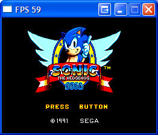
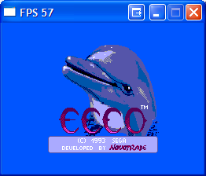
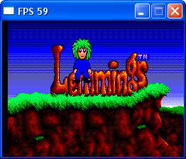
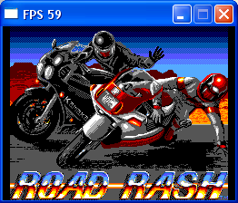
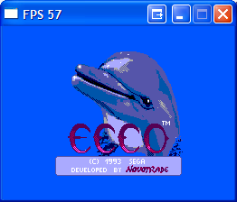
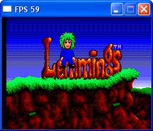
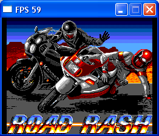

Sega Master System
This section of the site is dedicated to the emulation of the Sega Master System. My own emulator has approximately 95% compatibility including sound. The tutorials found here
should contain everything you need to know to emulate the Sega Master System. The coding design I adopted was chosen to make understanding of emulation easier for beginners. I am aware that
there are aspects that could be improved (like sound anti aliasing) and when I come to rewrite this emulator for integration with Zuko I shall do just that.
When you are ready to start learning how to emulate the SMS then use the navigation bar on the right hand side of this page.
Screenshots

 




